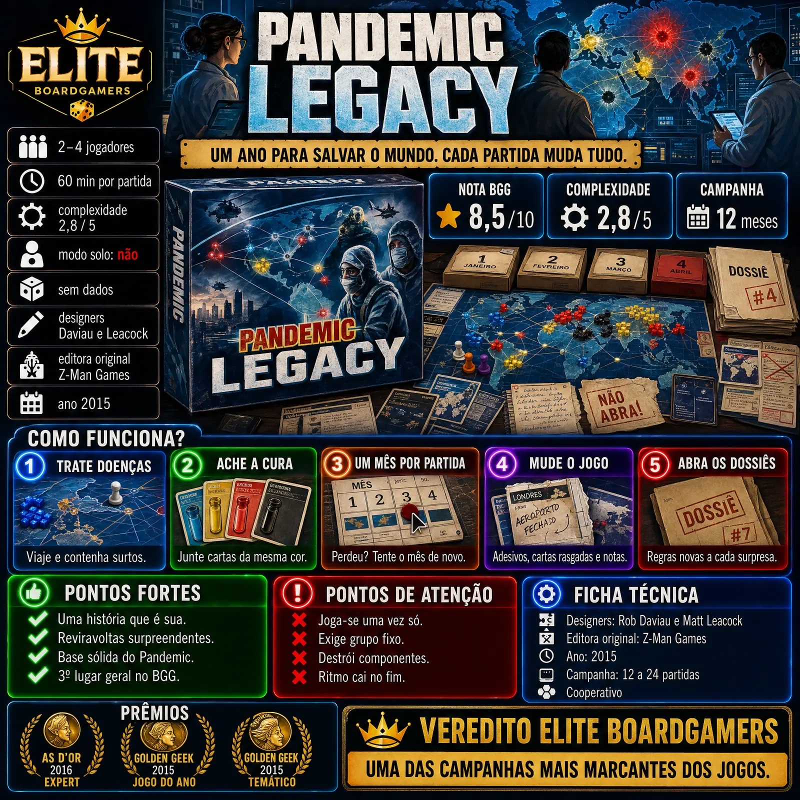

Pandemic Legacy: Season 1 transforma o cooperativo Pandemic numa campanha de um ano em que cada partida muda o jogo para sempre. Venceu o As d'Or Expert em 2016, quatro Golden Geek em 2015 (incluindo Jogo do Ano) e foi indicado ao Kennerspiel.

| Ano | 2015 |
|---|---|
| Designers | Rob Daviau e Matt Leacock |
| Editora original | Z-Man Games |
| Editora no Brasil | Devir aparece entre as editoras do jogo; edição nacional não confirmado nas fontes consultadas |
| Jogadores | 2 a 4 |
| Duração anunciada | 60 minutos por partida |
| Campanha | 12 meses, de 12 a 24 partidas conforme o desempenho do grupo |
| Nota BGG | 8,5 / 10 (segundo listagem que cita o BGG) |
| Peso BGG | 2,83 / 5 |
| Nota Ludopedia | não confirmado nas fontes consultadas |
| Modo solo oficial | Não |
| Ranking BGG | Chegou ao 3º lugar geral do BGG (Wikipedia, 2019) |
Nota e peso do BGG obtidos por busca; o ranking geral atual varia entre as fontes.
A base é o Pandemic: os jogadores viajam pelo mundo tratando doenças e procurando curas antes que surtos saiam do controle, cada um com um papel especial.
A campanha simula um ano: cada partida é um mês. Se o grupo perde, tenta o mesmo mês mais uma vez antes de seguir; por isso a campanha leva de 12 a 24 partidas.
Entre as partidas, o jogo muda para sempre: vocês escrevem nas cartas, colam adesivos no tabuleiro, rasgam cartas e abrem caixas e envelopes lacrados que trazem regras e reviravoltas novas.
As decisões do grupo ficam marcadas no tabuleiro; o Critic (NZ) elogia a sensação deliciosa de abrir, colar e rasgar componentes.
Envelopes lacrados mudam as regras ao longo do ano e mantêm a vontade de jogar a próxima partida.
O Pandemic original já era um dos cooperativos mais conhecidos; a campanha aproveita a regra que muitos já sabem.
Chegou ao 3º lugar geral do BoardGameGeek, segundo a Wikipedia.
A campanha acaba e os componentes ficam alterados; o Critic (NZ) aponta essa finitude como o único defeito real, crítica que a Wikipedia registra para o gênero legacy.
O ideal é jogar a campanha inteira com as mesmas pessoas, o que pede compromisso de várias sessões.
Rasgar cartas e colar adesivos permanentes afasta parte dos jogadores, como relatam comentários reunidos pela Zatu.
Um jogador citado pela Zatu achou que os meses 9 a 12 se arrastaram ao jogar tudo em pouco tempo.
Pandemic Legacy: Season 1 é uma das campanhas mais marcantes dos jogos de tabuleiro: um ano de reviravoltas que fica gravado no próprio tabuleiro. Joga-se uma vez só e exige grupo fixo, mas a experiência vale cada partida.
Um ano para salvar o mundo, gravado no tabuleiro.